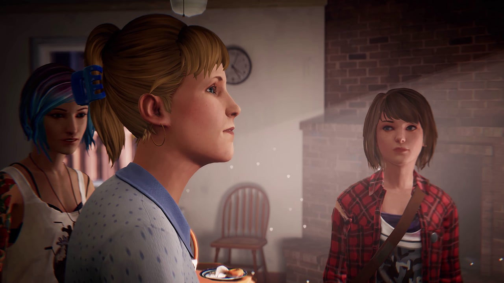

LIFE IS STRANGE
- Developer: DONTNOD Entertainment
- Genre(s): Sci-Fi, Action Adventure, General
SOBRE O JOGO

HISTÓRIA
Life is Strange é uma premiada aventura em episódios, aclamada pela crítica, que permite ao jogador voltar no tempo e alterar passado, presente e futuro.
Siga a história de Max Caulfield, uma estudante de fotografia que descobre ser capaz de rebobinar o tempo ao salvar a melhor amiga, Chloe Price.
As duas logo começam a investigar o desaparecimento misterioso da amiga e também estudante Rachel Amber, e desvendam o lado sombrio da vida em Arcadia Bay. Ao mesmo tempo, Max aprende rápido que alterar o passado pode por vezes levar a um futuro devastador.